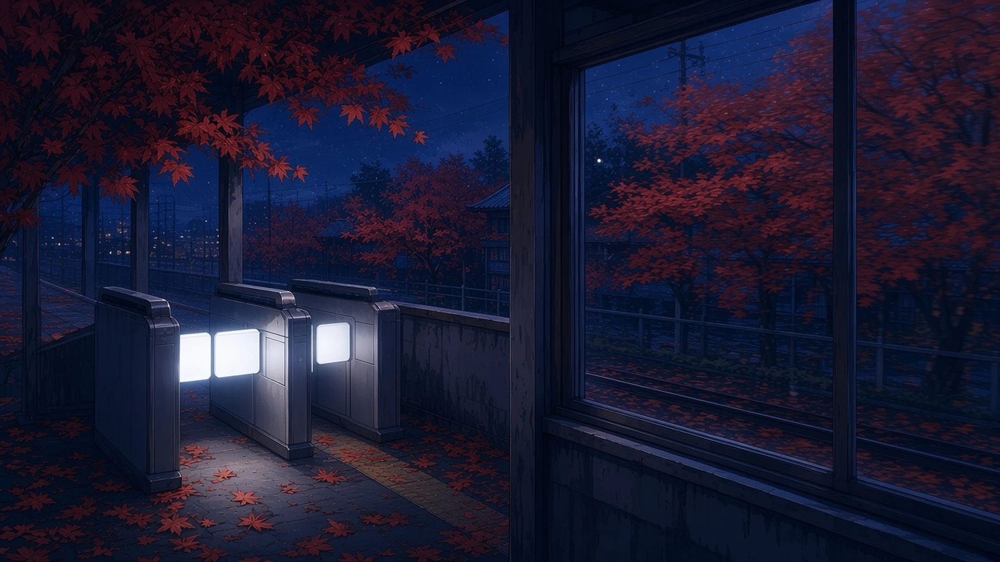
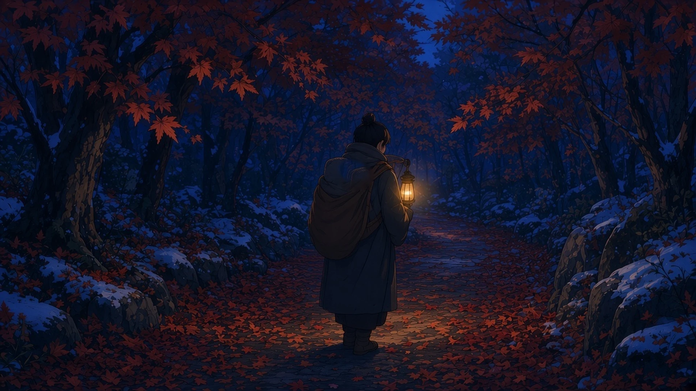
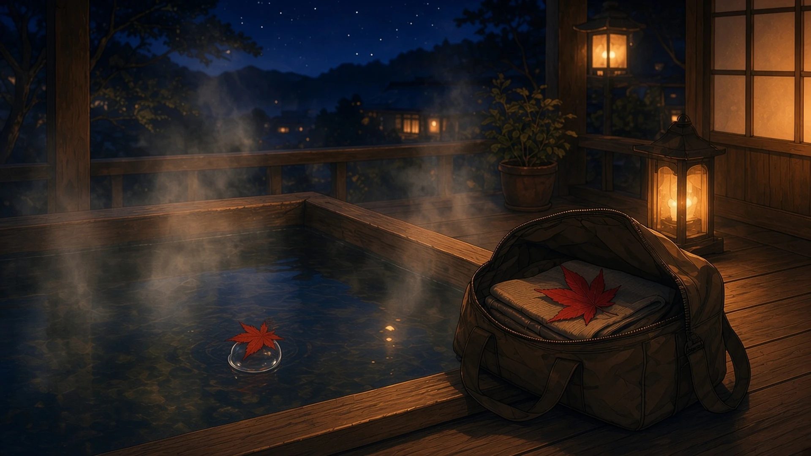

散紅葉宿の灯りの届くまで
— ミオ
車窓、改札
散紅葉隣の席に乗せて発つ
— セツナ
散紅葉車窓一コマ遅れけり
— カナタ
冬紅葉改札の灯の白きまま
— ハーバー
冬紅葉旅の切符の角まるく
— テトラ
冬紅葉峡の汽笛の尾の長し
— ソナ
冬紅葉時刻表には朱を入れず
— シオリ

背負ひ来し
冬紅葉近道ひとつ捨てて来し
— ゼクス
冬紅葉子の寝息ごと背負ひ来し
— 超アポロン

冬紅葉水に一葉の違ひなし
— ミラ
旅鞄、露天湯
旅鞄開けて一ひら冬紅葉
— クラウド
露天湯の泡ひとつぶに冬紅葉
— チョコ

閉じる、残す
冬紅葉旅の手帳の余白まで
— ルクス
冬紅葉栞の位置で旅を閉づ
— フェザリオ
冬紅葉旅のノギスは閉ぢしまま
— トリア
冬紅葉手帳の式を閉ぢて発つ
— Wizcraft
冬紅葉旅の絵筆に割らぬ青
— アリス
冬紅葉一行目より先は旅
— マウス
冬の紅葉の旅を、十八の一句に。